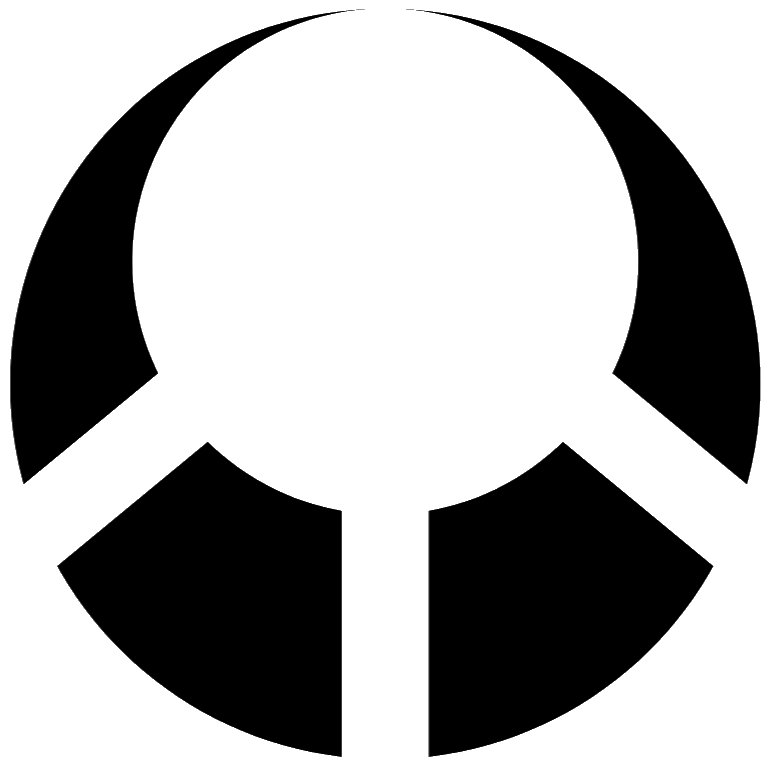
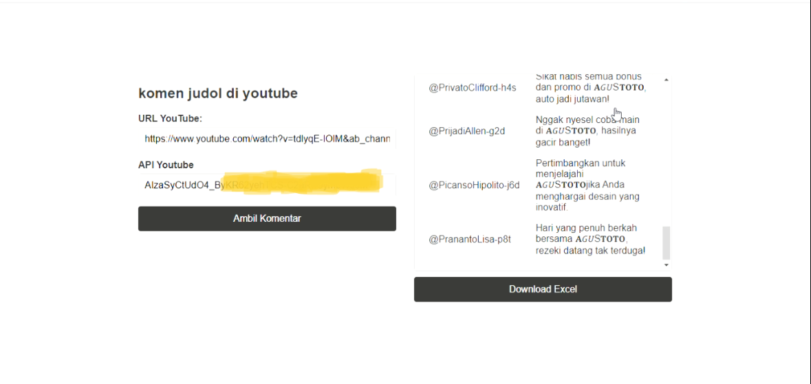
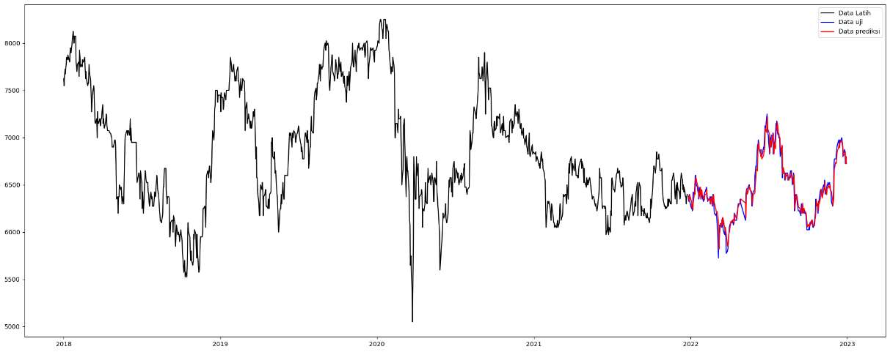

Muhamad Terbit Zikri
Saya Sarjana Teknik Informatika. Saya menguasai beberapa bahasa pemrograman seperti Python, JavaScript, PHP, Java. Saya juga memiliki minat dalam bidang pengolahan data.
Saya
Saya Muhammad Terbit Zikri, seorang lulusan Sarjana Teknik dari Universitas Ibn Khaldun Bogor dengan IPK 3,74. Selama masa studi, saya mengembangkan minat dan keahlian di bidang teknologi, khususnya dalam pengembangan perangkat lunak dan machine learning. Tugas akhir saya berfokus pada perbandingan dua metode machine learning, yaitu Long Short-Term Memory (LSTM) dan Double Random Forest, untuk memprediksi harga penutupan saham. Proyek ini tidak hanya memperdalam pemahaman saya tentang algoritma machine learning, tetapi juga melatih kemampuan analisis data dan pemecahan masalah.
Selain akademis, saya juga memiliki pengalaman praktis melalui magang di BAPPEDALITBANG Kabupaten Bogor, di mana saya terlibat dalam pengembangan website pendaftaran inovasi. Tugas saya sebagai backend developer dan manajer database meliputi pembuatan sistem yang efisien untuk memproses data dan memastikan informasi tersimpan dengan baik. Pengalaman ini mengasah kemampuan teknis saya dalam pemrograman menggunakan bahasa seperti Java, JavaScript, Python, dan PHP, serta memperkuat pemahaman saya tentang manajemen database.
Saya juga membuat beberpa projek sendiri, seperti membangun model machine learning untuk mengklasifikasikan komentar terkait perjudian di YouTube. Proyek ini bertujuan untuk membantu mengidentifikasi dan menyaring konten yang tidak pantas, menunjukkan kemampuan saya dalam menerapkan teknologi untuk menyelesaikan masalah sosial. Saya adalah pribadi yang selalu ingin belajar hal baru dan menantang diri sendiri untuk terus berkembang.
Saya percaya bahwa teknologi dapat menjadi alat yang powerful untuk menciptakan solusi inovatif, dan saya berkomitmen untuk berkontribusi dalam proyek-proyek yang memiliki dampak positif bagi masyarakat.
Portofolio

Mengambil data komen dari api youtube lalu disaring oleh model. Ada dua versi yang dibuat, menggunakan node js dan menggunakan html saja

Memprediksi harga saham t + 1 Menggunakan model LSTM dan Double Random Forest

Website untuk pendaftaran inovasi menggunakan framework CodeIgniter 3